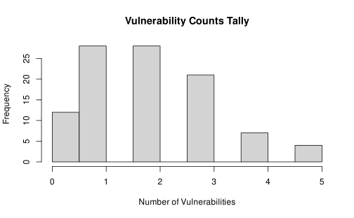

Whether adding a metric in a script or supplementing
val.meter with new metrics from a supporting package, we’ll
add new metrics all the same way. The only function we need to know is
impl_data(), which registers new data within the data
collection process and optionally surfaces it as a metric.
A simple metric
For simplicity, we’ll start with a rather trivial metric - using the number of characters in a package name as a (poor) heuristic for package quality.
Since package name is something that all packages will have, we can easily implement this metric for all packages.
Accessing package data
Before we can calculate a package name’s length, we first need to
access information about a package. There are a couple ways to do this!
We can take a look at all the package data that is available by using
the metrics() function. However, we need to pass
all = TRUE in order to include any internally calculated
data.
names(metrics(all = TRUE))
#> [1] "r_cmd_check" "desc"
#> [3] "archive_md5" "vignette_count"
#> [5] "name" "version"
#> [7] "r_cmd_check_error_count" "downloads_total"
#> [9] "dependency_count" "has_website"Sure enough, "name" is in the list. We can learn a bit
more about it by pulling this entry from our metrics:
m <- metrics(all = TRUE)
m$name
#> Package name <character>Implementing data
impl_data(
"name_character_count",
title = "Package Name Character Count",
function(pkg, ...) nchar(pkg$name)
)Already, we can see that it is added to our list of
metrics()
m <- metrics(all = TRUE)
m$name_character_count
#> Package Name Character Count <ANY>After being registered, we can immediately derive this piece of data
for a pkg() object.
p <- random_pkg()
p$name
#> [1] "incrediblesurvival"
p$name_character_count
#> [1] 18impl_data() registers the necessary methods related to
this piece of data, which val.meter uses internally to
record metadata and the derivation function.
Making our data a metric
Data and metrics are largely the same. We can convert data into a
metric by passing metric = TRUE to our
impl_data call. When we do, we’ll get stopped by a few
initial errors, which impose additional constraints on our
implementation. Let’s step through that process.
Re-implementing data
The first thing we’ll see is that data methods can’t be naively overwritten.
impl_data(
"name_character_count",
title = "Package Name Character Count",
metric = TRUE,
function(pkg, ...) nchar(pkg$name)
)
#> Error in impl_data_info(name = name, ..., overwrite = overwrite, quiet = quiet): data info for 'name_character_count' is already implemented. Use overwrite=TRUE to modify.Following the suggestion in the error message, we see that we need to confirm that we want to overwrite our existing data. Generally this is only needed when you’re developing a metric and want to iterate on the implementation.
impl_data(
"name_character_count",
title = "Package Name Character Count",
metric = TRUE,
overwrite = TRUE,
function(pkg, ...) nchar(pkg$name)
)
#> Error in (function (self, value) : metric data must have an atomic data classThe next thing we’ll see is that metric data has some additional
constraints imposed on the accepted data class. Metrics should be
summarized, straightforward data in an easy-to-use format, and for that
we require that they are “atomic” (see ?base::atomic for
details on exactly what qualifies). In short, atomic data are your
typical variable values - numbers, characters and logicals.
For metrics, we must declare what type our metric will be. This is
checked each time the metric is calculated to make sure we can operate
on this data with confidence. val.meter uses
S7 to manage methods and we prefer to use
S7::class_* objects to characterize these classes.
impl_data(
"name_character_count",
title = "Package Name Character Count",
metric = TRUE,
class = S7::class_integer,
overwrite = TRUE,
function(pkg, ...) nchar(pkg$name)
)
#> Overwriting method pkg_data_info(S3<pkg_data_field_name_character_count/pkg_data_field>)
#> Overwriting method pkg_data_derive(<val.meter::pkg>, <val.meter::resource>, S3<pkg_data_field_name_character_count/pkg_data_field>)And finally, we can again confirm that we’ve registered our metric.
This time we can avoid passing all = TRUE, as we’ve now
registered a metric.
m <- metrics()
m$name_character_count
#> Package Name Character Count <integer>A real-world metric
In practice, metrics can be a bit messier than simply the name of a package. There are a couple key considerations when implementing a non-trivial metric:
- how is the metric derived? Is the ability to calculate this metric limited by how we refer to this package?
- what dependencies are needed to derive this metric? Do we need to declare additional Suggested dependencies?
- what capabilities are needed? Do we need to do anything that a user should have to opt-in to?
- (optional) what tags do we want to use for this metric? This may help the discoverability of our metric.
Sometimes they depend on how you got your package. For
example, R will not install tests alongside a package by default, so
maybe we want to return NA for unit test coverage in
situations where a package has no tests directory in the
install library, but try to calculate something meaningful if we are
installing a fresh package from CRAN.
val.meter refers to the possible origins of packages as
resources. These encompass any source for package data.
This could be the CRAN package page, a git repository
address, a local .tar.gz package archive or local
directory, among plenty of other options. When using
val.meter, you get to choose which of these are permissible
resources. For now, we only need to know that resources may
have access to different information about a package so metric
derivations may only be possible using certain resources.
Further, we can declare our additional suggests()
dependencies. These will be consistently communicated so that end users
are made aware that their available metrics are limited.
Similarly, we need to annotate any required capabilities so that end
users must opt-in to metrics that require these capabilities by
providing the necessary permissions().
And finally, if we want to make our metric discoverable, we can
provide it with any associated tags().
Let’s implement a rigorous metric, which will surface vulnerabilities
using the rosv package.
Planning our metric
rosv provides a very useful interface for querying the
open source vulnerabilities (OSV) database. In our case, we can use a
known example to see how vulnerabilities might be reported:
rosv::osv_query(
"haven",
version = "0.1.1",
ecosystem = "CRAN",
all_affected = FALSE
)
#> id
#> 1 RSEC-2023-5
#> summary
#> 1 Infinite loop, memory leak, and heap-based buffer over-read vulnerabilities
#> modified published name ecosystem
#> 1 2025-05-19T19:43:47.336587Z 2023-10-05T05:00:00.600Z haven CRAN
#> purl versions
#> 1 pkg:cran/haven 0.1.1Note:
havenis a pillar of regulatory reporting!As we all know, some regulated industries have a legacy of using proprietary data formats. Because of their closed-source nature, the exact dissection of these data must be reverse-engineered.
havengoes through extreme lengths to do this as rigorously as possible.
We can see from the output that haven historically had a
few vulnerabilities reported. But we can also see a fair amount of
information provided by rosv.
Implementing intermediate data
Which data do we want to use as our metric? For now, let’s implement
just the number of vulnerabilities - but let’s also pave the way for
ourselves to add other metrics based on this result later. To do this,
let’s first gather the output of rosv as intermediate data,
which we’ll then use to derive our metrics as summarizing data.
What’s important to note is that rosv operates on
packages from CRAN, so we should be extra careful about not
assuming that packages installed locally are the same as those coming
from CRAN. There are tens of thousands of packages on
CRAN and we don’t want to accidentally report that a
package has no vulnerabilities just because it shares a name with one of
them.
impl_data(
"rosv_vulnerability_df",
# declare our suggested dependency on {rosv}
suggests = "rosv",
# require that users opt-in to network requests as part of this data
permissions = permissions("network"),
# assert that we expect a `data.frame` (S3 class) object
class = "data.frame",
# we'll only implement this for our cran_repo_resource
for_resource = cran_repo_resource,
function(pkg, ...) {
rosv::osv_query(
name = pkg$name,
version = pkg$version,
ecosystem = "CRAN",
all_affected = FALSE
)
}
)We can confirm our implementation by initializing a new
pkg object explicitly from a CRAN resource
r <- cran_repo_resource("haven", "0.1.1", repo = "https://cloud.r-project.org/")
p <- pkg(r, permissions = TRUE)
p$rosv_vulnerability_df
#> id
#> 1 RSEC-2023-5
#> summary
#> 1 Infinite loop, memory leak, and heap-based buffer over-read vulnerabilities
#> modified published name ecosystem
#> 1 2025-05-19T19:43:47.336587Z 2023-10-05T05:00:00.600Z haven CRAN
#> purl versions
#> 1 pkg:cran/haven 0.1.1That looks good! We can double check that a few of our guardrails are working as intended as well.
We can see that a generic repository will throw an error.
r <- repo_resource("haven", "0.1.1", repo = "https://fakecran.org/")
p <- pkg(r, permissions = "network")
p$rosv_vulnerability_df
#> <error/val_meter_not_implemented_for_resource_error>
#> ! data field "rosv_vulnerability_df" could not be derived because it is
#> not implemented for resource <val.meter::repo_resource>And that not providing necessary permissions for network access will similarly throw an error.
r <- cran_repo_resource("haven", "0.1.1", repo = "https://cloud.r-project.org/")
p <- pkg(r)
p$rosv_vulnerability_df
#> <error/val_meter_derive_error>
#> ! when deriving field "rosv_vulnerability_df"
#> data derivation was not granted permissions: "network"And similarly, if we didn’t have rosv installed we’d see
something like
r <- cran_repo_resource("haven", "0.1.1", repo = "https://cloud.r-project.org/")
p <- pkg(r, permissions = "network")
p$rosv_vulnerability_df#> <error/val_meter_derive_error>
#> ! when deriving field "rosv_vulnerability_df"
#> data derivation requires suggests: rosvNow that we can fetch the rosv response, we can process
it to derive our metric.
impl_data(
"vulnerability_count",
title = "Number of Reported Vulnerabilities",
description = "Number of vulnerabilities reported for this package version",
metric = TRUE,
class = S7::class_integer,
function(pkg, ...) {
nrow(pkg$rosv_vulnerability_df)
}
)And if we try to use it, we’ll find that we get
r <- cran_repo_resource("haven", "0.1.1", repo = "https://cloud.r-project.org/")
p <- pkg(r, permissions = "network")
p$vulnerability_count
#> [1] 1You may have noticed that we didn’t declare which resources we were going to implement this metric for! By default, this means we’re implementing it for any package resource. Let’s see what would happen if we tried it for a non-CRAN resource:
r <- repo_resource("haven", "0.1.1", repo = "https://fakecran.org/")
p <- pkg(r, permissions = "network")
p$vulnerability_count
#> <error/val_meter_derive_error>
#> ! when deriving field "vulnerability_count"
#> data field "rosv_vulnerability_df" could not be derived because it is not
#> implemented for resource <val.meter::repo_resource>When attempting to calculate our count, we implicitly try to fetch
the internal rosv_vulnerability_df, which itself is limited
to only CRAN repositories. We surface this error automatically when we
try to calculate a dependent metric.
Simulating metrics
For developers, we appreciate being able to simulate reasonably realistic packages for the purposes of examples, demonstration and expediting development.
Already, we can take a look at what a simulated vulnerability count might look like!
rpkg <- random_pkg()
rpkg$vulnerability_count
#> [1] 3Depending on the declared data type of metrics, we simulate data with some simple default rules. We can take a look at what is being generated over a sampling of random packages.
options(val.meter.policy = policy(permissions = TRUE))
rpkgs <- random_pkgs(n = 100)
rpkgs_df <- as.data.frame(rpkgs)
hist(
rpkgs_df$vulnerability_count,
main = "Vulnerability Counts Tally",
xlab = "Number of Vulnerabilities"
)
Well this would be alarming! A majority of packages come with vulnerabilities. This is definitely not reflective of the R ecosystem, so maybe we want to tone that frequency down a bit.
We can implement our own derivation using impl_data once
again. This time, we want to register a method for a very specific
resource, the mock_resource. This resource is used for
random packages and allows us to use the exact same dispatch mechanism
to create a custom data-generating process.
impl_data(
"vulnerability_count",
for_resource = mock_resource,
function(...) rpois(1, lambda = 0.1)
)If we again simulate some random packages and take a look at how many vulnerabilities are reported we get something that is a bit closer to reality.
rpkgs <- random_pkgs(n = 100)
rpkgs_df <- as.data.frame(rpkgs)
hist(
rpkgs_df$vulnerability_count,
main = "Vulnerability Counts Tally",
xlab = "Number of Vulnerabilities"
)Still higher than out in the wild, but perhaps a nice balance between being reasonably frequent for the purpose of example, but still far less than the half that we were seeing before.
Contributing metrics
If you got this far implementing a metric on your own, why not reach
out to us so that we can share your work more broadly? The best place to
start is by heading to our issues tracker, easily accessed by running
utils::bug.report(package = "val.meter").
We welcome all suggestions, even in a nascent state. We’ll work
together to decide exactly what should be distributed with
val.meter. We’ll often consider things like
- Whether we should be more restrictive about which resources can calculate this metric.
- Whether other resource types should get their own implementations
- If the metric requires additional dependencies, whether they are slim enough to be merely suggested, or whether they come with enough of a footprint to warrant a separate supporting package.
Looking forward to hearing what you come up with!